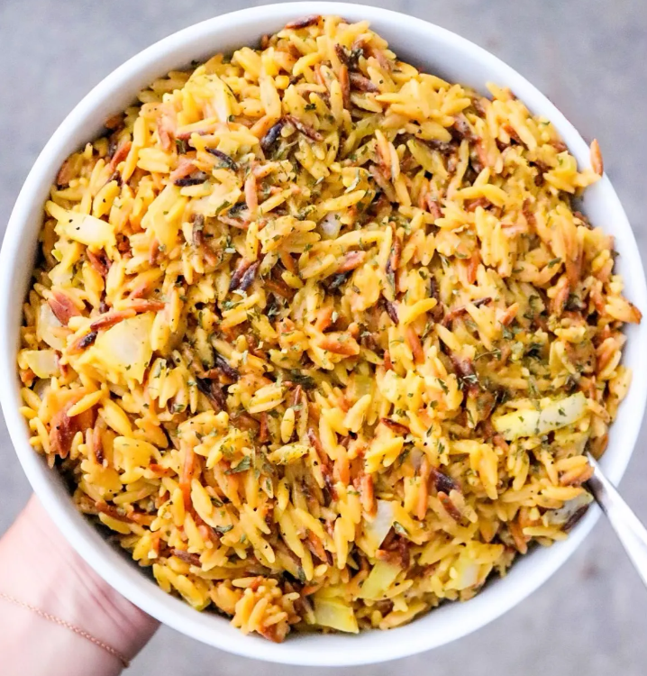

One Pot Creamy Garlic Orzo

Description
Quick and Easy Pasta Recipe.
Ingredients
- 4 tbsp margarine
- 2 cups orzo
- 6 tablespoons unsalted butter
- 3 cups vegetable stock
- 1/2 cup onion diced
- 3 garlic cloves
- 1/2 cup nutritional yeast
- 3/4 cup rice milk
- 1 tsp salt
- 1/4 tsp black pepper
- 1/2 tsp dried parsley
- 2 tsp lime juice
Steps
- Melt 2 tbsp margarine in a large skillet over low-medium heat. Stir in onions, garlic & orzo and sauté until orzo is lightly browned, about 5 minutes (stirring continuously & be careful not to burn the orzo).
- Slowly add the vegetable stock and bring to a boil. Lower to a simmer and cook for about 13 minutes, stirring occasionally (until the orzo is fully cooked).
- Once cooked, stir in the last 2 tbsp margarine, rice milk and nutritional yeast. While continuing to stir, bring back to a boil.
- Lower to a simmer and stir in salt, pepper, parsley & lime juice. Cook on low for another minute or so.
- Serve warm. Enjoy!